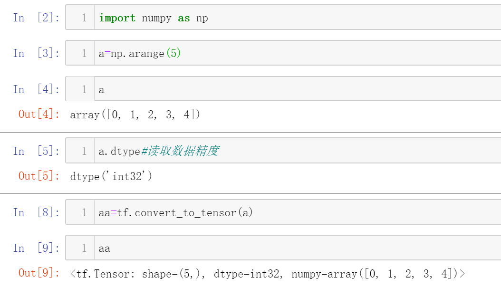
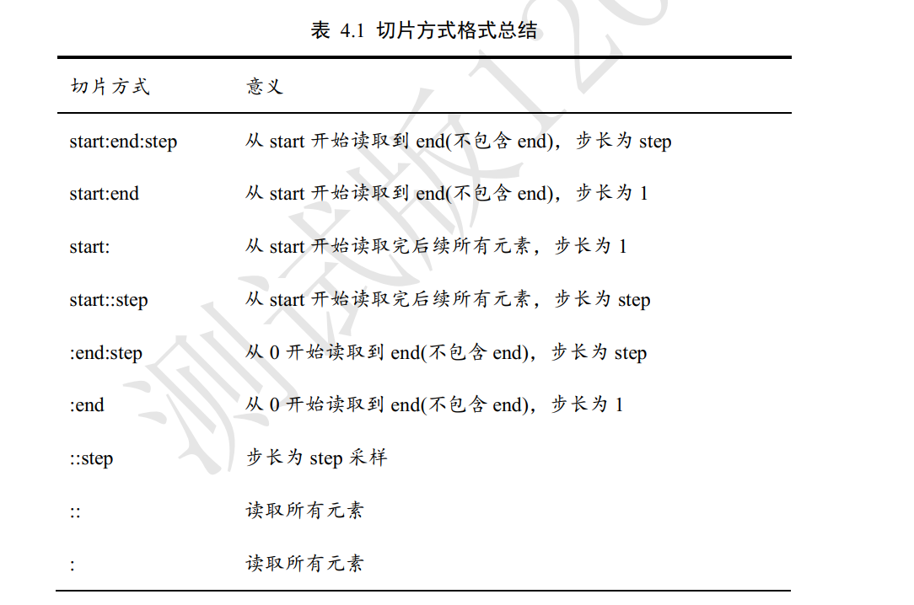
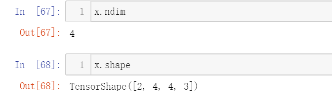
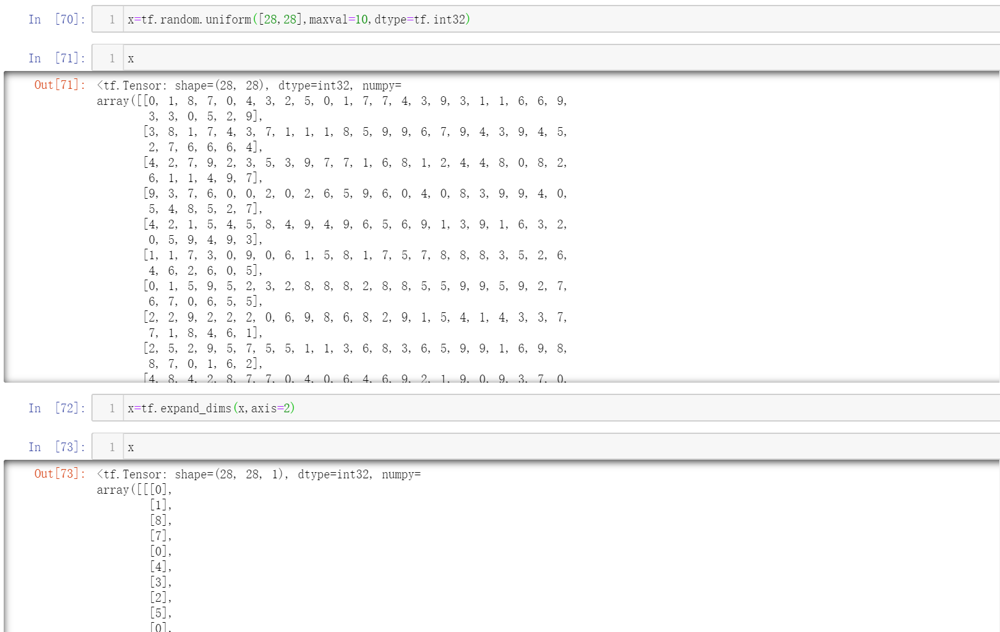
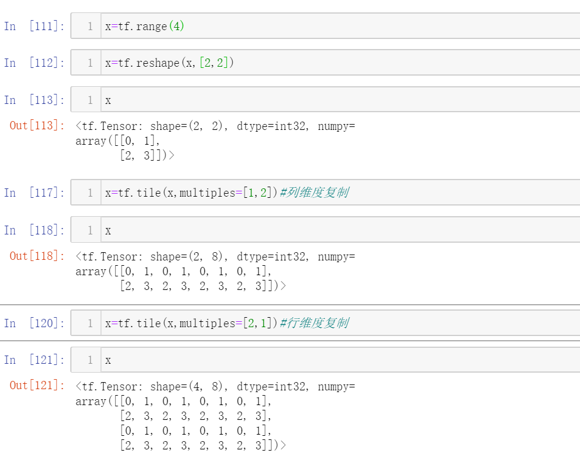

Tensor是什么

张量的维度也称作轴 (Axis)
一般把标量、向量、矩阵也统称为张量
TF中的数据类型
数值，布尔，字符串
1.数值类型
- 在tf中创建标量

使用.numpy可以返回Numpy.array类型的数据

- 在tf中创建向量
此时，必须使用List容器传值

- 在tf中创建矩阵
- 在tf中创建三维张量
2.字符串类型
不怎么用，Python内置的字符串方法已经足够
3.布尔类型

tf的布尔类型和Python内置的布尔类型不等价

类型转换
numpy ==> tensor

一般的，使用cast函数可完成不同数据类型，数据精度之间的转换
int ==> bool
bool ==> int

待优化的张量
对于一些需要训练优化的参数，可设置tf.Variable类型
比如神经网络中，输入的X不需要包装成该类型，而w和b需要

name和trainable是Variable特有的属性
创建张量
从数组，列表中创建
convert_to_tensor和constant作用一样，都是创建张量

创建全0或全1的张量
标量

向量

矩阵

可以使用tf.zeros_like()与tf.ones_like()创建一个与某张量维度一样的新的张量

创建自定义张量

创建服从标准正态分布的张量

创建服从普通正态分布的张量

创建服从均匀分布的张量
创建序列
和Python内置的range()很相似

索引
创建一个张量：4张32*32的彩色图片
1 | x=tf.random.normal([4,32,32,3]) |
取第一张图片的数据

取第一张图片的第2行
取第 1 张图片，第 2 行，第 3 列的数据

取第 3 张图片，第 2 行，第 1 列的像素， B 通道(第 2 个通道)颜色强度值

切片
和Python自带的切片方法很相似，只不过维度较高
选取前两张图片

读取第一张图片

::可以省略为一个:

切片方法汇总

和Python一样，step可为负
1 | x=tf.range(9) |

间隔选取与逆序间隔选取

行列逆序间隔选取第1张图片

取G通道数据

这样也可以取到G通道数据

读取第 1~2 张图片的 G/B 通道数据

读取最后两张图片

selective indexing
更灵活的切片方式
tf.gather
假设是4个班级，每个班级35个学生，每个学生有8门课的成绩
这里只是做演示，所以使用了随机生成的数据
1 | a=tf.random.normal([4,35,8]) |
选取第2和3班所有学生的所有成绩

它等价于
1 | a[2:4] |
选取每个班级中第2,3，7，9个学生的所有成绩
维度变换
改变视图

ndim ==> 查看张量的维数
shape ==> 查看张量的形状列表

当不确定某一维度大小时，可以写-1，会自动推导出其值（类似numpy）

增删维度
注意，增删维度并不会改变存储的数据，只会改变数据的视图， 增加（ 删除）维度只能增加（删除）长度为 1 的维度
增加维度
增加通道维度

增加图片数量维度

删除维度
删除图片数量维度
删除图片通道维度
交换维度
使用transpose
假设图片张量shape为[2,32,32,,3]，分别代表[b,h,w,c]
现在想要改为[b,c,h,w]
则新的维度的索引号分别对应旧维度的[0,3,1,2]
所以perm=[0,3,1,2]

看，此时shape已经改变
复制数据
使用tf.tile()
复制向量

复制矩阵

但这种方式计算开销大，所以有了广播机制
Broadcasing（广播机制、自动扩展机制）
在逻辑上扩展张量数据的形状， 但是只会在需要时才会执行实际存储复制操作
效果同tf.tile()
该操作对用户透明：

在上面的操作中，b的维度和x@w的维度不一样，但是却能做运算
原因就是广播机制的存在
tf中的数学运算
矩阵乘法
在tf中，当张量维度大于2时，TF会选择两个张量的最后两个维度做矩阵乘法
A和B能够做矩阵相乘的条件是，A的倒数第一个维度长度(列)和B的倒数第二个维度长度(行)必须相等。
比如张量 a shape:[4,3,28,32]可以与张量 b shape:[4,3,32,2]可以进行矩阵相乘 ，因为[28,32]与[32,2]的矩阵可以做矩阵乘法

也支持广播机制

上述运算前，先将b扩展为shape：[4,32,16],再与a做批量形式的矩阵乘法